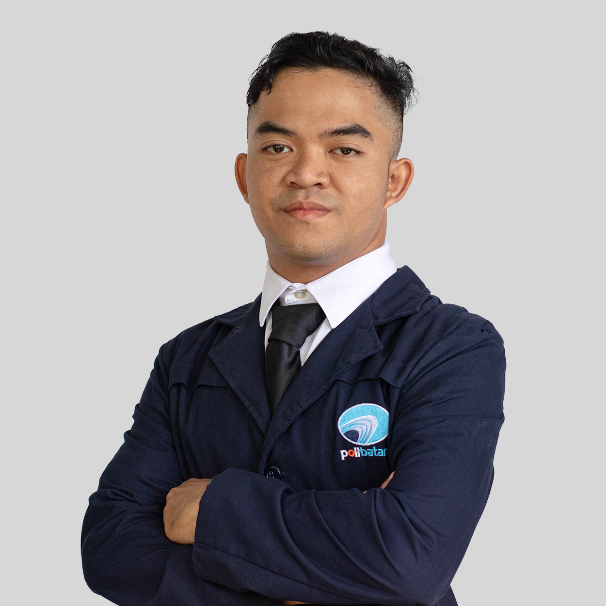

Muhammad Reihan Prasetya
Mahasiswa Politeknik Negeri Batam dengan ketertarikan besar di bidang Multimedia, Videografi, Produksi Konten, serta Desain UI/UX untuk platform website dan mobile.
Halo! Selamat datang di portofolio saya. Di sini, Anda bisa menelusuri perjalanan saya dalam dunia akademik, pengalaman kerja dan magang, proyek-proyek kreatif, serta keahlian yang terus saya kembangkan. Saya antusias mengeksplorasi dunia industri kreatif dan teknologi, dan selalu terbuka untuk kesempatan baru yang bisa mengasah keterampilan dan memperluas wawasan saya.
Lihat Proyek SayaPengalaman Profesional
Pengalaman kerja dan magang saya memberikan banyak pelajaran berharga tentang bagaimana dunia profesional sebenarnya berjalan. Di berbagai peran dan lingkungan kerja, saya belajar menerapkan keahlian secara langsung, beradaptasi dengan cepat, dan berkolaborasi secara efektif. Setiap pengalaman ini membantu saya tumbuh. bukan hanya secara teknis, tapi juga secara pribadi dan profesional.
Proyek Unggulan
Berikut adalah beberapa proyek yang telah saya kerjakan, baik secara individu maupun dalam tim. Proyek-proyek ini mencerminkan bagaimana saya menerapkan keahlian di bidang videografi, desain grafis, UI/UX, hingga pengembangan game dalam bentuk karya nyata yang kreatif dan berdampak. Setiap proyek adalah peluang untuk belajar dan berkembang lebih jauh.
Keahlian Utama
Saya memiliki beragam keahlian teknis dan kreatif yang terus saya kembangkan seiring waktu. Mulai dari desain grafis, editing video, hingga pengembangan aplikasi dan game. setiap keterampilan saya pelajari dengan semangat eksplorasi dan rasa ingin tahu yang tinggi. Di bagian ini, saya merinci kompetensi utama saya yang mendukung kontribusi saya dalam berbagai proyek dan kolaborasi.
Multimedia & Desain
- Videografi & Fotografi
- Video Editing (Adobe Premiere Pro, After Effects)
- Desain Grafis (CorelDRAW, Illustrator, Photoshop, Lightroom)
- UI/UX Design (Figma)
- Blender (3D Modeling, Animasi, Rendering)
Produksi Konten & Broadcasting
- Produksi Video (Pra-produksi, Produksi, Pasca-produksi)
- Produksi Film (Penulisan Naskah, Penyutradaraan, Editing Akhir)
- Broadcasting (Switcher, OBS Studio)
Pengembangan Game & VR
- Unity (Pengembangan Game, Simulasi, Pengalaman Interaktif)
- Virtual Reality (Pengembangan & Pengujian Konten VR)
- Gameplay Testing
Lain-lain
- Microsoft Office (Word, Excel, PowerPoint)
- Komunikasi Visual
- Kerja Tim
- Adaptif
- Kru Outlet (Persiapan makanan, pelayanan pelanggan, kasir)
Pengalaman Volunteer
Terlibat dalam kegiatan volunteer memberikan saya kesempatan untuk berkontribusi secara nyata kepada masyarakat sekaligus belajar banyak hal baru. Dari pengalaman ini, saya mengasah kemampuan bekerja dalam tim, beradaptasi dengan lingkungan yang beragam, serta memperkuat keterampilan komunikasi dan empati.
Sertifikasi & Pelatihan
Saya percaya bahwa pembelajaran tidak berhenti di bangku kuliah. Karena itu, saya aktif mengikuti berbagai sertifikasi dan pelatihan untuk terus mengasah kemampuan dan memperluas wawasan. Komitmen ini membantu saya tetap relevan dengan perkembangan industri serta menambah nilai dalam setiap peran yang saya jalani.
Pendidikan & Organisasi
Pendidikan formal dan pengalaman organisasi telah menjadi fondasi penting dalam membentuk cara saya berpikir dan bekerja. Melalui pembelajaran di institusi dan partisipasi aktif dalam organisasi, saya mengembangkan kemampuan kolaborasi, komunikasi, serta kepemimpinan. Di bawah ini adalah perjalanan saya di dunia pendidikan dan organisasi yang membentuk siapa saya hari ini.
Pendidikan
Politeknik Negeri Batam – Batam
Teknik Informatika – (D4) Teknik Multimedia & Jaringan, IPK: 3.67/4.00
Agustus 2022 - Sekarang
SMK Negeri 5 Batam – Batam
Siswa, Jurusan Produksi Grafika, IPK: 85.65
Juli 2019 – Juli 2022
Organisasi
Reka Multimedia Polibatam (REKAM)
Divisi Produksi (2023 - 2024)
Anggota Umum (2025 - 2026)
Program kerja: VOC, Rekam Belajar, Festival Rekam, REMAKISM, Workshop Inspire Recreate, BEP, Dies Natalis REKAM, REKOR, CCTV, Workshop Crafting Creativity, Pengaderan, Gathering Internal, Re-talk.
Badan Eksekutif Mahasiswa (BEM) Polibatam
Kementerian KOMINFO - Magang (2024)
Program kerja: Pengaderan BEM 2024, Ormawa Celebrations, Forum Media Ormawa 2, Pengabdian Staf Muda BEM 2024, Gathering BEM 2024.
Youtuber Batam (Komunitas)
Anggota (2020 - 2022)
Short Film: Rumah Kost, Bukan Nasibku, The Bandit, Lelah, Waktu.
Hubungi Saya
Saya sangat terbuka untuk berdiskusi seputar kerja sama, peluang proyek, atau sekadar bertukar ide. Jika Anda merasa keahlian saya bisa memberi nilai tambah untuk tim atau proyek Anda, jangan ragu untuk menghubungi saya. Silakan hubungi saya melalui kontak di bawah ini atau terhubung langsung lewat LinkedIn. Saya akan dengan senang hati merespons secepat mungkin!
Kota Batam, Kepulauan Riau, Indonesia (Hub. saya untuk informasi lebih lanjut)